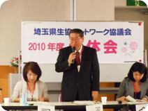
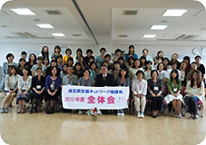

|
|
全体会に先立って、｢世界の食卓から見た日本の食｣と題して、千葉保先生(元小学校校長、国学院大学兼任講師)によるスキルアップ応援講座を行いました。 ■全体会 1．埼玉県生協連の伊藤恭一会長理事より、2010年度の体制について、5月19日の県生協連理事会で滝澤玲子さんが引き続き会長に推薦されたことが報告されました。また、｢私たちは消費者市民社会を目指し、誰もが安心して消費できる社会、公平で健全な社会にするために、私たち自身が運動し活動していくことが大切です。ネットワーク協議会は、年々委員も増えています。皆さんが学習・交流して輪を広げ、ますます活発に活動をしてください。この活動が埼玉県の生協の力になっていきます。｣とあいさつされました。 2．埼玉県生協ネットワーク協議会の会長に滝澤玲子さんが拍手で確認され、挨拶がありました。 4．協議会メンバーの自己紹介を行いました。 5．滝澤会長より、｢生協ネットワーク協議会が目指すもの｣が話され、設置要綱の確認が行われました。 6．事務局から2009年度の充実した活動報告と決算について説明し、確認されました。続いて、滝澤会長から2010年度活動計画と活動方針｢広く地域の中でつながりあうために｣を総合テーマとして、学習・交流活動をしていくことが提案され確認されました。事務局からも2010年度の予算について説明をしました。 |